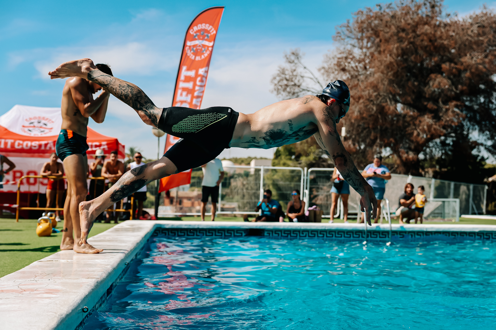
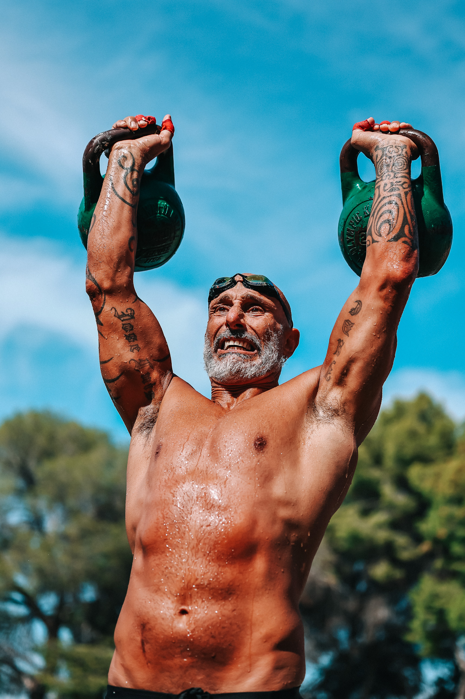

The Costa Blanca Games brought pairs to Alicante on 26 September for a full day of functional fitness competition, with scaled, intermediate and RX divisions designed to welcome different levels of experience.
Organiser CrossFit Costa Blanca built the event around shared effort and varied tests. The programme combined heavy tyre work and kettlebell movements with a pool station that challenged coordination as much as raw power.

A competition shaped by variety
The changing stations forced competitors to adjust quickly between strength, conditioning and water-based tasks. Across the field, partners shared the workload while spectators followed the action at close range.

Image Media’s coverage team documented the competition from the floor and poolside, following the effort, teamwork and atmosphere across the day.
The complete event photography is available through the official Image Media gallery.
View the Costa Blanca Games photo gallery →
Image Media coverage
Reporting: IM News Editorial Desk
Coverage photographers: Regis Souza, Jessica Freitas, Johnny and José Ramón Moreno / Image Media
Event date, location and competition format checked against the official registration platform and organiser communications.